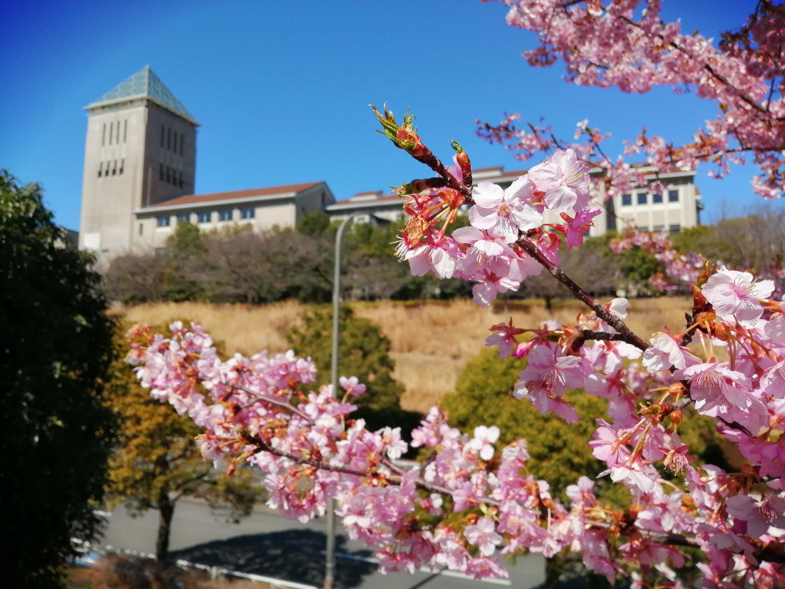

クラスオリエンテーションについて
クラスオリエンテーションとは
通称クラオリです。 春から共に学ぶ同じクラスの新しい仲間同士で交流を深めましょう。 3年生の先輩達に履修やサークル、部活動といった大学生活の相談も出来ます。 他にも、各種委員決めなどの今後の予定において重要なことを決める場でもあるのでできる限り参加しましょう！
スケジュール
| 日にち | イベント | 内容 | 開始時刻 |
|---|---|---|---|
| 4/2（金） | 履修ガイダンス |
資料に同梱したビラにクラオリのクラス分けについてのビラがあります。
ビラにはクラオリについて説明がありますので、そこにあるQRコードを読み取って表示される資料にZoomのURLを掲載します。
履修ガイダンスの開始時刻は本学教務課の案内を確認してください。 |
|
| 4/5 (月) | クラスオリエンテーション1日目 | 人文社会学部 | 17:00 |
| 法学部 | 16:00 | ||
| 経済経営学部 | 16:30 | ||
| システムデザイン学部 | 17:30 | ||
| 4/6 (火) | クラスオリエンテーション2日目 | 理学部 | 18:30 |
| 都市環境学部 | |||
| 健康福祉学部 | |||